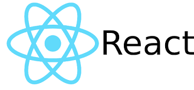

WEB-разработка — процедура создания WEB-приложения или WEB-сайта. Основными этапами этого процесса являются
мероприятия (далее читайте в этой статье…)
WEB-разработка — процедура создания WEB-приложения или WEB-сайта. Основными этапами этого процесса являются
такие мероприятия, как WEB-дизайн, вёрстка страниц сайта, WEB-программирование на стороне сервера и клиента, а
также работы по конфигурированию WEB-сервера.

React (иногда React.js или ReactJS) — JavaScript-библиотека[4] с открытым исходным кодом для разработки
пользовательских интерфейсов.
React разрабатывается и поддерживается Facebook, Instagram и сообществом отдельных разработчиков и
корпораций[5][6][7].
React может использоваться для разработки одностраничных и мобильных приложений. Его цель — предоставить
высокую скорость, простоту и масштабируемость. В качестве библиотеки для разработки пользовательских
интерфейсов React часто используется с другими библиотеками, такими как Redux.

Bootcamp — методика, которую использовали в лагерях для подготовки солдат. Чтобы стать полноценным бойцом, в
обычных условиях новобранцу нужно 3-4 года. В условиях Bootcamp такого результата достигали за 4 месяца.
Эффективность методики обоснована тем, что на период кемпа человек полностью погружается в процесс обучения и
быстрей воспринимает информацию. Сейчас этот метод обучения активно используют в Гарварде, IT-компаниях,
бизнес-проектах и образовательных программах.